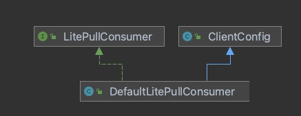
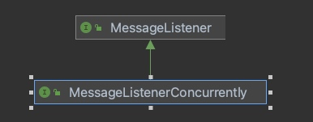
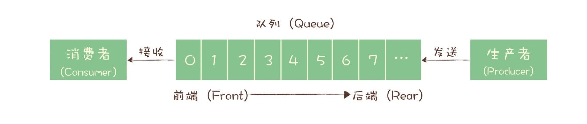

RocketMQ源码解读
NameServer源码
画了PorcessOn-RocketMQ4.4-NameServer流程图
从代码写法上来说，有几点疑问：
MixAll这个类，不知道设计来干啥的？而且金山的代码有使用到这个，不知道具体用法？- 命令行解析的写法值得借鉴，我感觉需要看一下最新的代码，看这块有无改进？
RocketMQ是如何支持多种日志框架的？
Producer源码解读
Producer在框架中的类定义关系是？
最基础的Producer接口是MQProducer
client包中有两个类实现这个接口
DefaultMQProducer线程安全
TransactionMQProducer用于事务消息
最主要的就是send方法
这个需要查看example的代码来实践用法
Consumer源码解读
Consumer在框架中的类定义关系是？
最基础的Consumer接口是MQConsumer
client包有两个接口继承这个接口
MQPullConsumer用于Pull方式的消费者MQPushConsumer用于Push方式的消费者
其中，Push方式的类继承比较直接，是DefaultMQPushConsumer
而Pull方式的类继承就有一点绕，本来是DefaultMQPullConsumer
但是按照代码注释来看，这个类被禁用了，2022年会被移除，在Pull方式下，官方建议使用DefaultLitePullConsumer

但是奇怪的是，LitePullConsumer并没有实现MQConsumer的接口
最主要的还是registerMessageListener方法
其中方法参数是MessageListener消息监听者接口
继承该接口的接口是MessageListenerConcurrently,继承关系如下

速读摘要
前言
作者彭峰，留美博士，在08年左右就开始做以开源Hadoop替换Oracle，并在此之上做了一系列数据驱动产品，满足了不断增长的数据产品需求。
普遍认同的数据中台的任务：大同企业各个部门之间的数据，形成统一的数据开发和使用规范，在企业各个部门之间实现数据能力的抽象、共享和复用。
数据中台的价值更多体现在与业务结合的能力矩阵，而不是简单的数据标准化和报表工具上。数据中台一般使用数据湖来存储可以反应全局业务情况的原始数据，能够对核心业务流程进行更全面、更深入的分析，并在此基础上加快对市场的认识和反应，降低产品研发和试错的成本，缩短时间。
数据中台的一个天然特性是支持多元异构的数据以及处理这些数据的工具。为了避免不断建设独立的系统形成数据孤岛，利用云原生架构能够快速地扩展服务节点，简化了统一数据规范的工作。
建设数据中台的目的在于，深刻理解当前的业务流程，提出优化建议并提供能力支持。
数据中台应采取业务驱动、快速落地、小步快跑的方式，在这个过程中，使用合适的指标体系衡量数据中台的投入产出比，以及提供合适的工具赋能业务部门，有助于数据中台得到业务部门的支持和认可，顺利完成中台的实施。
数据中台与硅谷大数据平台
第一章
建设数据中台的最终目标是通过高效的数字化运营，实现“快速市场响应，精细化运营，开源节流”
所有数据工具的建设目的都是从数据中提取价值来支持更有效的数字化运营。所谓价值，就是BI（Business Intelligence）和AI。
数据中台有一个比传统大数据平台和数据仓库层次更高的要求：实现数据能力的全局抽象、共享和复用。
如何实现数据中台建设目标：
- 有从数据中产生价值的能力，必须有高效好用的数据处理工具
- 要有全局的数据汇聚和治理，需要完成统一的数据规范
- 对数据处理能力的抽象，实现能力的复用和共享
- 顶层设计后进行推广
- 由实际需求设计再进行进一步抽象推广
- 协调复用和效率的矛盾，需要有一套工具来精确衡量数据能力的ROI（投入产出比）
数据中台的特点：
- 汇聚全局的数据为用户赋能
- 实现数据能力的抽象
- 通过工具体系让企业各部门共享抽象的数据能力
- 高效地管理数据能力并加以复用
大数据平台 转型为 数据中台的几点考量 （P18）
大数据平台的架构图（P20）
数据中台应该是大数据平台的一个超集：
- 全局的数据应用资产管理
- 全局的数据治理机制
- 自助的、多租户的数据应用开发及发布
- 数据应用的CI/CD
- 新的数据应用技术框架的快速集成
- 数据即服务，模型即服务（无代码的方式发布）
- 数据能力共享管理
- 完善的运营指标
- 阿里巴巴提出的OneID，OneModel，OneService
- TotalPlatform，不允许数据孤岛和局部数据
- TotalInsight，用户可以轻松理解全局的数据资产和能力
数据中台的五大要求（P23）
数据中台建设方法论要点：
- 业务驱动，快速落地
- 顶层架构设计及数据规范
- 平台管理
- 明确得到责权利制定
- 必须是一个安全、高效、稳定、可扩展的系统
第六章详细介绍阐述，数据中台建设的一整套技术和方法论
第二章
数字中台不是银弹，数字中台的成果是建立在信息化的基础上的，没有完善的信息化基础，企业就无法全面理解企业业务。
数据中台是企业进入更高级管理阶段的一个标志。
数据中台的核心能力（P31）
- 全局商业洞见
- 个性化服务
- 实时数据报表
- 共享能力开发新业务
数据中台的行业应用场景（P41）
- 互联网行业
- 连锁零售业
- 金融业
- 物联网
数据中台如何为企业赋能（P45）
- 组织架构
- 决策部门
- 业务部门
- 研发部门
- 大数据部门
第三章
主要是讲数字化转型，数字驱动的案例，数字中台支持数字化转型的做法
第四章[TODO]
主要是讲从大数据平台到数据中台的建设
【TODO】 有空要着重看一下这章节
数据中台架构和方法论
第五章[TODO]
主要是讲数据中台建设的教训和问题，如何评判效果，以及人员规划，技术选型
【TODO】 有空要着重看一下这章节
第六章[TODO]
主要是讲建设数据中台的方法论，有几个比较关注的就是，数据规范，数据驱动，关键指标，责权利怎么界定，管理迭代等重点问题
【TODO】 有空要着重看一下这章节
第七章[TODO]
以具体案例，讲解了典型的硅谷大数据平台架构，这个可以参考架构思路
【TODO】 有空要着重看一下这章节
第八章
主要是安利在云原生架构之下建设数据中台，比较偏理论和阐述观点
数据中台技术选型与核心内容
第九章[TODO]
主要是列出数据中台的各领域的开源软件，给技术选型用以参考
【TODO】 有空要着重看一下这章节
第十章[高优]
主要是讲解数据湖和数据仓库，有空结合一下行内的数据湖和数据仓库的材料看一下
【高优先】 近期要着重看一下这章节
第十一章[TODO]
数据资产管理，主要是讲解概念，定义和数据资产的ROI
【TODO】 有空要着重看一下这章节
第十二章[高优]
数据流水线管理，主要专业相关，侧重查看这个章节
【高优先】 近期要着重看一下这章节
第十三章[高优]
数据应用开发，主要是讲解了应用侧的，实际上和我们数据集成做的工作比较相关，我们做的调度系统也比较偏向于应用调度系统，这个可以参考借鉴
【高优先】 近期要着重看一下这章节
第十四章[TODO]
数据门户，主要是安利了，这个主要是看他怎么做社交属性和智能运维
【TODO】 有空要着重看一下这章节
第十五章[TODO]
数据中台演进，主要是看关键指标
【TODO】 有空要着重看一下这章节
数据中台案例分析
十六章
介绍EA数据中台
第十七章
介绍零售业的数据中台
第十八章
介绍物联网领域数据中台
消息队列学习笔记
消息队列概述
- 消息队列适合解决什么问题？
- 异步处理
- 流量控制
- 解耦应用
- 消息分发
- 使用消息队列的问题和局限性
- 引入消息队列带来的延迟问题
- 增加了系统的复杂度
- 可能产生数据不一致的问题
- 可供选择的开源消息队列产品：
- 老牌儿消息队列 RabbitMQ，俗称兔子 MQ。
RabbitMQ 一个比较有特色的功能是支持非常灵活的路由配置，和其他消息队列不同的是，它在生产者（Producer）和队列（Queue）之间增加了一个 Exchange 模块，你可以理解为交换机。这个 Exchange 模块的作用和交换机也非常相似，根据配置的路由规则将生产者发出的消息分发到不同的队列中。路由的规则也非常灵活，甚至你可以自己来实现路由规则。基于这个 Exchange，可以产生很多的玩儿法，如果你正好需要这个功能，RabbitMQ 是个不错的选择。
RabbitMQ有几个问题：1. 对消息堆积的支持并不好，大量消息堆积会导致RabbitMQ性能急剧下降。2. RabbitMQ性能比RocketMQ和Kafka都差，如果应用对消息队列性能要求非常高，不要选择RabbitMQ。3. RabbitMQ使用Erlang开发，不好做二次开发或拓展。
- RocketMQ 是阿里巴巴在 2012 年开源的消息队列产品，后来捐赠给 Apache 软件基金会，2017 正式毕业，成为 Apache 的顶级项目。
RocketMQ 就像一个品学兼优的好学生，有着不错的性能，稳定性和可靠性，具备一个现代的消息队列应该有的几乎全部功能和特性，并且它还在持续的成长中。
RocketMQ 对在线业务的响应时延做了很多的优化，大多数情况下可以做到毫秒级的响应，如果你的应用场景很在意响应时延，那应该选择使用 RocketMQ。每秒钟大概能处理几十万条消息。
RocketMQ 的一个劣势是，作为国产的消息队列，相比国外的比较流行的同类产品，在国际上还没有那么流行，与周边生态系统的集成和兼容程度要略逊一筹。
- Kafka 最早是由 LinkedIn 开发，目前也是 Apache 的顶级项目。Kafka 最初的设计目的是用于处理海量的日志。
Kafka 与周边生态系统的兼容性是最好的没有之一，尤其在大数据和流计算领域，几乎所有的相关开源软件系统都会优先支持 Kafka。
Kafka 使用 Scala 和 Java 语言开发，设计上大量使用了批量和异步的思想，这种设计使得 Kafka 能做到超高的性能。Kafka 的性能，尤其是异步收发的性能，是三者中最好的，但与 RocketMQ 并没有量级上的差异，大约每秒钟可以处理几十万条消息。
但是 Kafka 这种异步批量的设计带来的问题是，它的同步收发消息的响应时延比较高，因为当客户端发送一条消息的时候，Kafka 并不会立即发送出去，而是要等一会儿攒一批再发送，在它的 Broker 中，很多地方都会使用这种“先攒一波再一起处理”的设计。当你的业务场景中，每秒钟消息数量没有那么多的时候，Kafka 的时延反而会比较高。所以，Kafka 不太适合在线业务场景。
- Pulsar是一个新兴的开源消息队列产品，最早是由 Yahoo 开发，目前处于成长期，流行度和成熟度相对没有那么高。与其他消息队列最大的不同是，Pulsar 采用存储和计算分离的设计.
总结：如果只是需要一个开箱即用易于维护的产品，建议用RabbitMQ。如果主要常见在于处理在线业务，RocketMQ的低延迟和金融级的稳定性是需要的。如果需要处理海量消息，Kafka异步处理比较适合。
消息模型
队列模型

早期的消息队列，就是按照“队列”的数据结构来设计的。我们一起看下这个图，生产者（Producer）发消息就是入队操作，消费者（Consumer）收消息就是出队也就是删除操作，服务端存放消息的容器自然就称为“队列”。
队列模型存在的问题
多个生产者往消息队列里面发送消息，消费者能够消费到的消息就是这些生产者生产的所有消息的合计。消息的顺序就是这些生产者发送消息的自然顺序。
但如果有多个消费者接受同一个队列的消息，这些消费者之间实际上是竞争的关系，每个消费者只能收到队列中的一部分消息，也就是说任何一条消息只能被其中一个消费者收到。
如果需要将一份消息数据分发给多个消费者，要求每个消费者都能收到这个消息，比如一份订单数据，风控系统、分析系统、支付系统等都需要接收消息。这个时候，单个队列就满足不了需求，一个可行的解决方式是，为每个消费者创建一个单独的队列，让生产者发送多份。这样会耗费大量资源，而且生产者必须知道有多少个消费者，这样他才能为每个消费者单独发送一份消息，这实际上违背了消息队列“解耦”的这个设计。
发布-订阅模型（Publish-Subscribe Pattern）
在发布 - 订阅模型中，消息的发送方称为发布者（Publisher），消息的接收方称为订阅者（Subscriber），服务端存放消息的容器称为主题（Topic）。
发布者将消息发送到主题中，订阅者在接收消息之前需要先“订阅主题”。“订阅”在这里既是一个动作，同时还可以认为是主题在消费时的一个逻辑副本，每份订阅中，订阅者都可以接收到主题的所有消息。
- 队列模型和发布-订阅模型最大的区别：一份消息数据能不能被消费多次的问题。
- 队列模型和发布-订阅模型：如果只有一个订阅者，发布-订阅模型就是队列模型。
RabbitMQ的消息模型
在 RabbitMQ 中，Exchange 位于生产者和队列之间，生产者并不关心将消息发送给哪个队列，而是将消息发送给 Exchange，由 Exchange 上配置的策略来决定将消息投递到哪些队列中。
- RabbitMQ消息模型如何实现发布-订阅模型？
Exchange配置消息发送到多个队列，变相实现一份消息消费多次的发布-订阅模型。
同一份消息如果需要被多个消费者来消费，需要配置 Exchange 将消息发送到多个队列，每个队列中都存放一份完整的消息数据，可以为一个消费者提供消费服务。这也可以变相地实现新发布 - 订阅模型中，“一份消息数据可以被多个订阅者来多次消费”这样的功能。
RocketMQ的消息模型
RocketMQ 使用的消息模型是标准的发布 - 订阅模型，但是，在 RocketMQ 也有队列（Queue）这个概念，并且队列在 RocketMQ 中是一个非常重要的概念。RocketMQ消息模型中，每个主题中包含了多个队列，通过多个队列来实现多实例并行生产和消费。
- 什么是“请求 - 确认”机制？
几乎所有的消息队列产品都使用一种非常朴素的“请求 - 确认”机制，确保消息不会在传递过程中由于网络或服务器故障丢失。在生产端，生产者先将消息发送给服务端，也就是 Broker，服务端在收到消息并将消息写入主题或者队列中后，会给生产者发送确认的响应。如果生产者没有收到服务端的确认或者收到失败的响应，则会重新发送消息；在消费端，消费者在收到消息并完成自己的消费业务逻辑（比如，将数据保存到数据库中）后，也会给服务端发送消费成功的确认，服务端只有收到消费确认后，才认为一条消息被成功消费，否则它会给消费者重新发送这条消息，直到收到对应的消费成功确认。
- “请求-确认”机制会给消费端带来什么问题？
在某一条消息被成功消费之前，下一条消息是不能被消费的，否则就会出现消息空洞，违背了有序性的原则。也就是说，发布-订阅模型中每个主题在任意时刻，至多只能有一个消费者实例在进行消费，那就无法通过水平扩展消费者的数量来提升提升消费端总体的消费性能。
- RocketMQ消息模型与发布-订阅模型的不同点
RocketMQ 只在队列上保证消息的有序性，主题层面是无法保证消息的严格顺序的。RocketMQ 中，订阅者的概念是通过消费组（Consumer Group）来体现的。每个消费组都消费主题中一份完整的消息，不同消费组之间消费进度彼此不受影响，也就是说，一条消息被 Consumer Group1 消费过，也会再给 Consumer Group2 消费。在 Topic 的消费过程中，由于消息需要被不同的组进行多次消费，所以消费完的消息并不会立即被删除，这就需要 RocketMQ 为每个消费组在每个队列上维护一个消费位置（Consumer Offset），这个位置之前的消息都被消费过，之后的消息都没有被消费过，每成功消费一条消息，消费位置就加一。这个消费位置是非常重要的概念，我们在使用消息队列的时候，丢消息的原因大多是由于消费位置处理不当导致的。
- Kafka和RocketMQ消息模型的异同
Kafka和RocketMQ在消息模型上是完全一致的，唯一的区别在于，RocketMQ中主题里面有分多个队列，而Kafka中队列的概念对应名称是“分区”。
事务消息
分布式事务的4个属性：ACID特性，原子性、一致性、隔离性、持久性
比较常见的分布式事务：2PC（Two-phase commit，二阶段提交）TCC（Try-Confirm-Cancle）和事务消息。
事务消息适用的常见主要是那些需要异步更新数据，并且对数据实时性要求不太高的场景。
- 消息队列如何实现分布式事务？
- 订单系统在消息队列上开启一个事务
- 订单系统给消息服务器发送一个“半消息”，这个半消息不是说消息内容不完整，它包含的内容就是完整的消息内容，半消息和普通消息的唯一区别是，在事务提交之前，对于消费者来说，这个消息是不可见的。
- 半消息发送成功后，订单系统就可以执行本地事务了，在订单库中创建一条订单记录，并提交订单库的数据库事务。
- 如果订单创建成功，那就提交事务消息，购物车系统就可以消费到这条消息继续后续的流程。如果订单创建失败，那就回滚事务消息，购物车系统就不会收到这条消息。
第四步可能会出现提交事务消息失败，此时还是会出现不满足一致性要求的问题，
- Kafka和RocketMQ如何处理提交事务消息失败导致事务消息不满足一致性要求的问题？
Kafka和RocketMQ都提供了相应的解决方案。如果提交事务消息失败，Kafka会直接抛出异常，让用户自行处理。在业务代码里，我们可以反复重试提交，直到提交成功，或者回退之前的本地处理。
RocketMQ给出另外一种解决方案，RocketMQ增加了事务反查的机制来解决事务消息提交失败的问题。如果生产者在提交或者回滚事务消息时发生网络异常，RocketMQ的Broker没有收到提交或者回滚的要求，Broker会定期去Producer上反查这个事务对应的本地事务的状态，然后根据反查结果决定提交或者回滚这个事务。
为了支撑这个事务反查机制，我们的业务代码需要实现一个反查本地事务状态的接口，告知RocketMQ本地事务是成功还是失败，这个本地事务的实现，并不依赖消息的发送方，这种情况下，即使是发送事务消息的生产者节点宕机了，RocketMQ仍然可以通过其他生产者节点来执行反查，确保事务的完整性。
- 相比于原来的事务消息实现，RocketMQ有何不同点？
RocketMQ对于第四步提交或回滚事务失败，能够实现本地事务反查机制，来根据本地事务的反查结果决定最后是否投递或者回滚事务消息。
消息丢失
- 如何检测消息丢失？
IT基础设施比较完善的公司，一般都有分布式链路追踪系统，使用类似的追踪系统可以很方便地追踪每一条消息。但如果没有这样的追踪系统，我们可以利用消息队列的有序性来验证是否有消息丢失。
我们给生产者节点发出的消息都附加一个连续递增的序号，然后在消费者节点来检查这个序号的连续性。如果消息没有丢失，序号必然是连续的，如果消息丢失了，那么就是丢消息了，还可以通过缺失的序号来确定丢失的是哪条消息，方便进一步排查原因。
大多数消息队列的客户端都支持拦截器机制，可以利用这个机制将序号注入到消息中，在消费者节点收到消息的拦截器中检测序号的连续性，这样实现的好处是消息检测的代码不会侵入到业务代码，待系统稳定后，也方便讲这部分检测的逻辑关闭或者删除。
以上是针对单机系统实现的消息丢失检测方法，对于分布式系统要实现这个消息丢失检测方法，还有几个问题：
- Kafka和RocketMQ这些消息队列，不保证Topic上的严格顺序，只能保证分区（队列）上的消息是有序的，所以我们在发消息的时候，要指定分区（队列），并且每个分区单独检测消息序号的连续性。
- 如果系统的生产者节点是多实例的，由于并不好协调多个生产者端消息的发送顺序，所以也需要每个生产者分别生产各自的消息序号，并且需要附加上生产者节点的标识，在消费者端按照每个生产者来分别检测序号的连续性。
- 消费者节点的数量最好和分区数量一致，做到消费者和分区一一对应，这样比较好单独处理每一个分区。
- 日常使用中如何保证不会丢失消息？
-
生产阶段，生产者节点一定要根据请求确认机制，发送消息之后要正确处理返回值或者捕获异常，就可以保证这个阶段消息不会丢失。
-
存储阶段，如果Broker出现了故障，比如进程死掉了或者服务器宕机了，还是可能会丢失信息。如果对消息的可靠性要求非常高，可以通过配置Broker参数来避免因为宕机丢失信息。
如果是单节点的Broker，需要配置Broker参数，将消息写入磁盘后再给Producer返回确认响应，由于此时消息已经写入磁盘了，服务恢复之后还能继续消费。
RocketMQ中，需要将刷盘方式flushDiskType配置为SYNC_FLUSH同步刷盘。
如果是多节点组成的Broker，需要配置Broker集群为：至少将消息发送到2个以上的节点，再给客户端回复发送确认响应，这样当Broker宕机时，其他的Broker也可以替代宕机的Broker，也不会发生消息丢失。
-
消费阶段和生产阶段一样，都是要根据请求确认机制，需要注意的是，不要再收到消息后就立即发送消费确认，而是应该在执行完所有消费业务逻辑之后，再发送消费确认。
重复消息
消息传递过程中，如果出现传递失败的情况，发送方会执行重试，重试的过程中就有可能会产生重复的消息。对使用消息队列的业务系统来说，如果没有对重复消息进行处理，就有可能会导致系统的数据出现错误。
在MQTT协议中，给出了三种传递消息时能够提供的服务质量标准，这三种服务指令从低到高依次是：
- At most once，至多一次，没有消息可靠性包之，允许丢消息，消息传递时，最多会被送达一次。
- At least once，至少一次，不允许丢消息，但是允许有少量重复消息出现，消息传递时，至少会被送达一次。
- Exactly once，恰好一次，消息传递时，只会被送达一次，不允许丢失也不允许重复，这个是最高标准。
这个服务指令标准不仅适用于MTQQ，对所有消息队列都是适用的。
我们现在常用的绝大部分消息队列提供的服务质量都是At least once，包括RocketMQ/RabbitMQ/Kafka等，也就是说消息队列很难保证消息不重复。
解决重复消息问题的关键在于：幂等性（让消费消息的业务方法具有幂等性，也就是说其认一多次执行所产生的影响均与一次执行的影响相同）
如果我们系统消费消息的业务逻辑具备幂等性，那就不用担心消息重复的问题，从对系统影响结果来说，At least once + 幂等消费 = Exactly once。
常用的几种设计幂等操作的方法有：
- 利用数据库的唯一约束实现幂等
如果是关系型数据库，只要是支持类似” INSERT IF NOT EXIST“ 语义的存储系统都可以用于实现幂等，Redis的SETNX命令也可以替代数据库的唯一约束，来实现幂等消费。
- 为更新数据设置前置条件
给数据变更设置一个前置条件，如果满足条件就更新数据，否则拒绝更新数据。
如果我们要更新的数据不是数值，是比较复杂的更新操作，更加通用的方法是给数据加一个版本号属性，每次更新数据之前，比较当前数据的版本号是否和消息中的版本号一致，如果不一致就拒绝更新数据，更新数据的同事将版本号+1，一样可以实现幂等更新。
- 记录并检查操作
适用范围最广的实现幂等性的方法：记录并检查操作，也成为”Token机制或者GUID（全局唯一ID）机制“。
具体实现方法是，在发送消息时，给每条消息指定一个全局唯一的ID，消费时先根据这个ID检查这条消息是否有被消费过，如果没被消费过，才更新数据，然后将消费状态设置为已消费。
然而，分布式系统中要实现”检查消费状态，然后更新数据并且设置消费状态“这三个操作作为一组操作保证原子性，才能实现幂等，否则就会出现Bug。
对于分布式系统，我们可以用事务，或者用锁来实现，但在分布式系统中，无论是分布式事务还是分布式锁都是比较难解决问题，所以一般不推荐使用。
幂等性同样适用于其他重试导致的重复调用问题，可以举一反三。
消息积压
消息积压得直接原因：系统中某个部分出现了性能问题，来不及处理上游发送的消息才会导致消息积压。
一般来说，我们解决消息积压问题时，关注点不应该是消息队列本身的性能（一般消息队列每秒钟能处理几万至几十万条消息的水平），主要关注点在于，我们的业务代码怎么和消息队列配合，达到一个最佳的性能。
- 发送端性能优化
一般发送端代码，都是先执行业务逻辑，最后才发送消息。如果说，发送端发送消息的性能上不去，需要有先检查一下，是不是发送消息之前的业务逻辑耗时太多导致。
一般来说，单线程的发送端发送消息的耗时包含的步骤主要是：1）发送端准备数据，序列化消息，构造请求等逻辑的时间，也就是发送端在发送网络请求之前的耗时；2）发送消息和返回想要在网络传输中的耗时；3）Broker处理消息的时延。
如果是单线程发送消息，每次只发送1条消息，相比于多线程，每次可以发送n条消息，再相比于多线程m批次发送消息，每次可以发送m*n条消息，所以只要业务逻辑能够适应多批量多线程的场景，设置合适的并发和批量大小，就可以达到很好的发送性能。
对于业务逻辑来说，
- 消费端性能优化
消息队列自查Q&A
- 消息队列常见用途？
- 使用消息队列有什么局限？
- 常见的消息队列产品有哪些？他们各有什么优缺点？
Kubectl 备考命令
- 应试小技巧
- kubectl get
- kubectl describe
- kubectl run
- kubectl create
- kubectl scale
- kubectl expose
- kubectl label
- kubectl taint
应试小技巧
export do="--dry-run=client -o yaml"
kubectl run nginx --image=nginx $do > pod.yaml
export now="--force --grace-priod 0"
kubectl delete po nginx $now
kubectl get
kubectl 支持资源对象的简称：
| 资源对象 | 简称 |
|---|---|
| Configmaps | cfg |
| Pod | po |
| Service | svc |
| Deployment | deploy |
| ReplicaSet | rs |
| ReplicaController | rc |
| Namespace | ns |
| DaemonSets | ds |
| Nodes | no |
| ServiceAccounts | sa |
| Services | svc |
| PersistentVolumeClaims | pvc |
| PersistentVolume | pv |
kubectl get 额外参数
-o yaml以yaml形式输出-o wide输出更多信息-l env=prod用以列出以标签env的值为prod的Pod
kubectl describe
- 查看一个资源对象的详细信息
kubectl describe 简称 对象名称
kubectl run
- 创建一个po叫做nginx，包含一个容器，镜像是nginx
kubectl run nginx --image=nginx
kubectl create
- 创建一个deploy，名字是httpd，replicas=3，镜像名是httpd
kubectl create deploy httpd --replicas=3 --image=httpd
kubectl scale
- 将Replica Set设置成replicas=5
kubectl scale --replicas=5 rs new-replica-set
kubectl expose
- 将Deployment暴露为一个NodePort的Service，但需要注意的是，这个方法没办法指定NodePort端口，端口将为大于30000的随机端口，所以可以直接输出成文件之后再修改
kubectl expose deployment simple-webapp-deployment --port=8080 --target-port=8080 --type='NodePort' --selector='name=simple-webapp' --name webapp-service --dry-run=client -o yaml > service.yaml
kubectl label
kubectl taint
- 给Node1节点加上一个Taint信息
kubectl taint nodes
Copyright © 2015 Powered by MWeb, Theme used GitHub CSS.